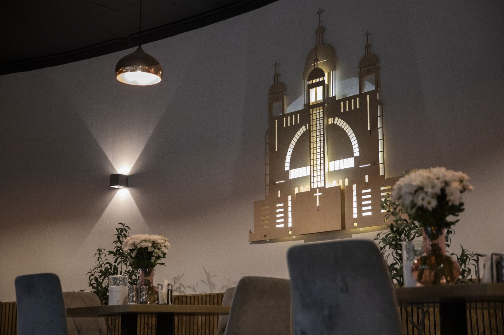

Крок 01
Собор, який завжди був прихистком
Патріарший собор давно служить людям не лише як храм. Під час Революції Гідності його знали як «Патріаршу криївку», а на початку повномасштабного вторгнення собор був наповнений людьми вдень і вночі.
Цей досвід став основою майбутньої Світлиці.
